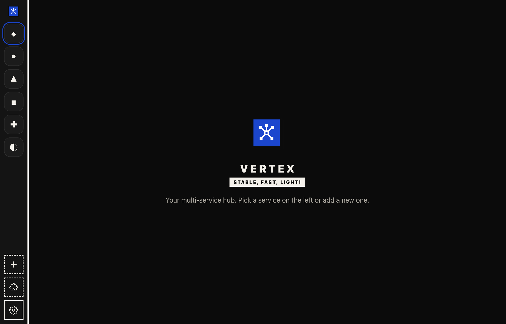
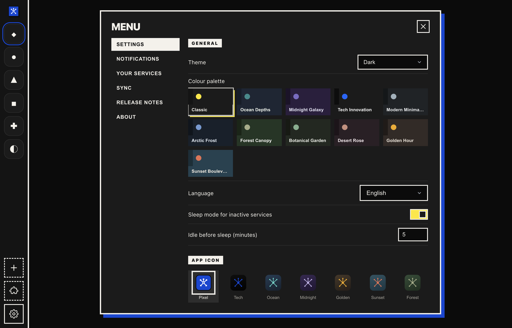

Separate sessions
Each service keeps its cookies and data apart from the others. Add the same messenger three times and stay signed in to three accounts.
Vertex is a free Mac app for messengers, mail and web apps. Every service has its own session, so you can be signed in to several accounts of the same service.

Works with
Vertex takes care of the window around your services: the sidebar, notifications and settings. The services themselves work exactly as in the browser.
Each service keeps its cookies and data apart from the others. Add the same messenger three times and stay signed in to three accounts.
New messages arrive as regular macOS notifications. You manage them in System Settings, like for any other app.
Telegram, WhatsApp, Slack, Discord, Gmail, Notion, Figma, Zoom and many more. Any other website can be added by its address.
Services you are not using are slowed down and put to sleep after a few minutes. They wake up as soon as you open them.
Optional extensions block ads and cookie banners or send services through a proxy. They contain filter lists and settings, never code.
11 colour palettes, each in a light and a dark version, and 13 app icons to choose from.
Change how a service looks or behaves with your own CSS and JavaScript. Export it to a file and import it on another Mac.
Drag services in the sidebar into the order you want. Vertex keeps it.
Similar apps often limit their free version to a few services or accounts. Vertex has no paid version and no limits.
Any number of services and accounts, extensions and themes. No trial, no subscription.
You don't need to sign up, and Vertex collects no usage data. Your logins stay on your Mac.
Vertex does not read or process your messages. It only shows your services.
Extensions are signed and contain only data such as filter lists. They cannot run code.
The catalog has 12 messengers and more than 100 other services: mail, calendars, documents, design and AI tools.
Vertex itself only connects to GitHub, for the extension list and filter updates, and to Google's favicon service when you add a website by address. All other traffic comes from the services you use.
Move your services and settings to another Mac with a QR code. Logins and custom code are not included.
Choose an app icon for the Dock and a colour theme for the window. Both are set separately.

| App | Free plan | To remove limits |
|---|---|---|
| Vertex | Everything, no limits | — |
| Rambox | 2 accounts per app | Pro, $7 / month |
| Wavebox | 2 groups of 2 apps | Pro, €8.33 / month |
| Shift | 5 spaces, 10 apps | Advanced, $199.99 / year |
Limits of the free plans as listed on the vendors' websites in September 2026.
Download the DMG, open it and drag Vertex into Applications. On the first launch macOS asks you to confirm once.
Vertex is not yet signed with a paid Apple developer certificate, so macOS stops the first launch with “Vertex Not Opened”. Click Done.
Then open System Settings → Privacy & Security, scroll down, click Open Anyway next to Vertex and confirm with your password. From then on Vertex opens like any other app.
If you prefer Terminal, this command does the same in one step:
xattr -dr com.apple.quarantine /Applications/Vertex.app
Yes. There is no paid version, no trial and no subscription.
Vertex is not yet signed with a paid Apple developer certificate. Confirm it once under System Settings → Privacy & Security → Open Anyway.
On your Mac, separately for each service. When you remove a service, its data is deleted too.
Yes. Enter its address and it is added as a service with its own session.
Not yet. Vertex currently needs a Mac with Apple Silicon and macOS 12 or later.
The list of services with names, addresses and notification settings, plus the language and a few options. Logins, cookies and custom code are not transferred.